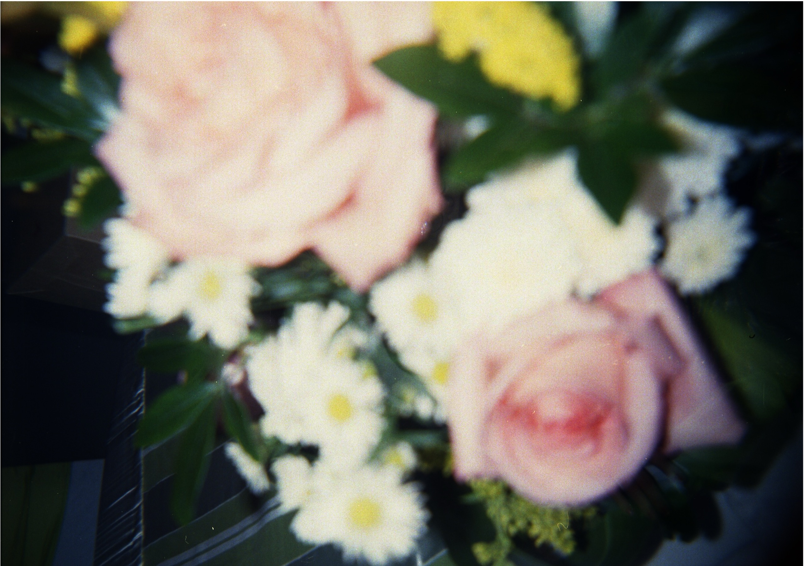

adriana calahorra-oliart
Ph.D. in Evolutionary Biology
I am fascinated by biological shape and by the evolutionary questions that can be addressed with its study. Firm believer that science should be applied in creating positive changes in the world, socially and ecologically.